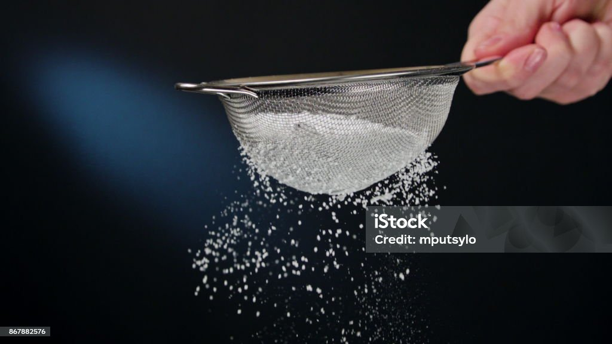
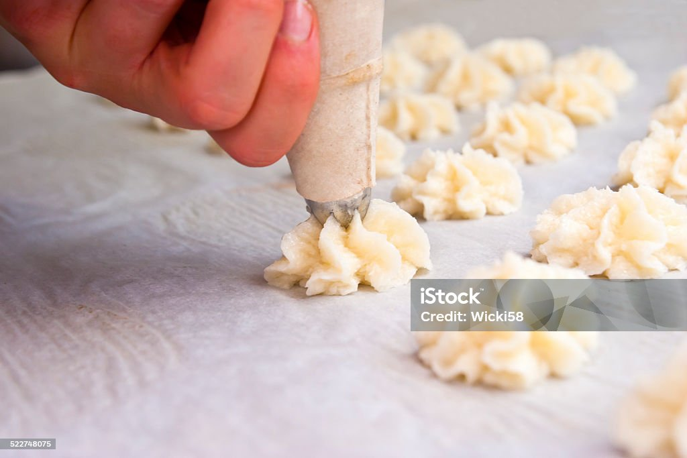
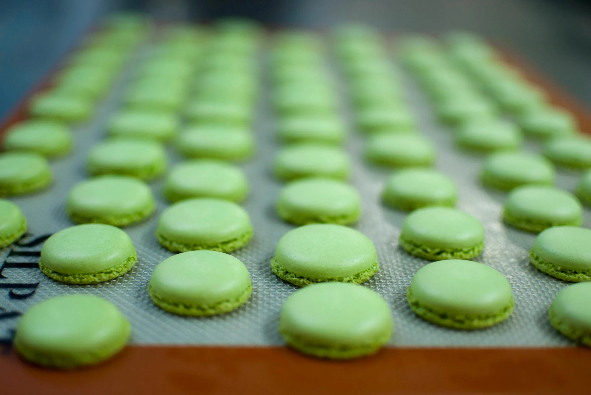
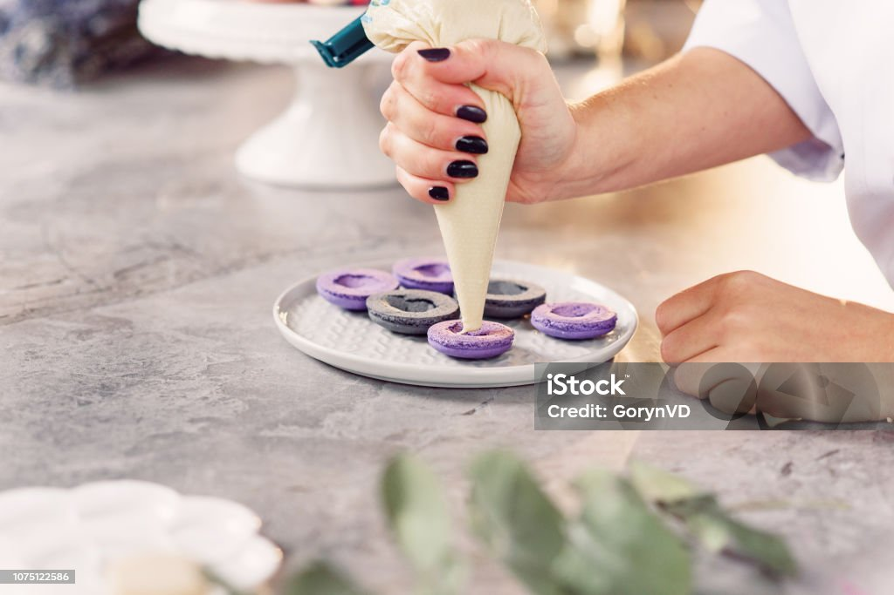

Prepping the Macarons

sifting by Pexels .
Ingredients:
35g powdered sugar
35g almon flour
35g egg white
25g sugar
1 lemon
Gel based food coloring
Step 1: Soak a paper towel in lemon juice and wipe it
around the inside of a bowl.
Step 2: Sift powdered sugar and almond flour into
a separate bowl.
Getting Into Action
hand mixer by Pexels .
Step 3: Whisk eggs preferably with a mixer until
consistancy is foamy, then add sugar by thirds.
Step 4: Add sifted mixture by halves. Ditch the mixer
by folding bottom to center with a spatula or spoon.
Add any gel based food coloring by choice.
Piping the Macarons

piping by Pexels .
Step 5: Transfer mixture into a piping bag or ziblock
using a cup to hold up the bag. Pipe onto tray leaving 2 inches of
space.
Baking the Macarons

macarons by Pexels .
Step 6: Poke any air bubbles with a toothpick. Tap
onto counter to remove any excess air bubbles. Let it dry
for 30 minutes. Preheat the oven to 300 and bake for 10-15
minutes. Let it fully cool down before removing from pan.
Filling the Macarons

macarons by Pexels .
You can fill your macarons with any type of filling
you like. Here are some of my choices.
Cream Cheese:
50g soften cream cheese mixed with
10g of powdered sugar.
Strawberry:
1. Put freeze dried strawberries into a food
processor.
2. Beat softened butter until smooth, add
strawberries and powdered sugar slowly until as
much as your choosing.
3. Beat for 5 minutes, if too thick add milk.
Chocolate:
1. Chop chocolate and heat up heavy cream in a
small sauce pan on low heat, don't over boil.
2. When it comes to a light simmer with steam
and small bubbles, poor it onto the chocolate.
3. After letting it sit for 1 minute, gently mix
then adding butter and 1/2 tsp of vanilla.
4. Let it sit in the fridge for 30 minutes to 1 hour.
Check and stir every 15 minutes then letting it sit
in room temperature before filling.
Ube:
Mixing 100g of softened butter, 65g of cream cheese,
and 1/2 tsp of ube extract.